붙여넣고, 받으세요
주소 하나로 mp4 영상이나 mp3 음원을 받는 가벼운 macOS 앱이에요.
할 일은 하나뿐이에요
붙여넣기
복사한 주소를 버튼 한 번으로 붙여넣어요.
형식 고르기
QuickTime에서 바로 재생되는 mp4, 또는 mp3 음원.
다운로드
진행률을 보여주고, 끝나면 알림으로 알려줘요.
설치 방법
-
1
yt-dlp와 ffmpeg 설치
Moise는 Homebrew로 설치한 두 도구를 사용해요. 터미널에서 한 번만 실행하면 돼요.
brew install yt-dlp ffmpeg -
2
Applications 폴더로 옮기기
받은
Moise.dmg를 열고 Moise를 Applications 폴더로 끌어다 놓으세요. -
3
처음 열기
"확인되지 않은 개발자" 경고가 뜨면 시스템 설정 › 개인정보 보호 및 보안 맨 아래에서 "그래도 열기"를 눌러 주세요. 또는 터미널에서 아래 명령을 실행해도 돼요.
xattr -dr com.apple.quarantine /Applications/Moise.app
다운로드가 갑자기 안 되면 영상 사이트가 바뀌었을 수 있어요.
brew upgrade yt-dlp로 업데이트해 주세요.